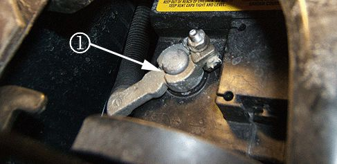

Battery - Battery Cable Bolts/Clamps/Nuts Inspection
INFORMATIONBulletin No.: 07-06-03-002C
Date: July 21, 2010
Subject: Information on Inspecting Top Post Battery Cable Bolts, Clamps and Nuts During Pre-Delivery Inspection (PDI)
Models:
2007-2011 Cadillac Escalade Models
2007-2011 Chevrolet Avalanche, Silverado, Suburban, Tahoe
2007-2011 GMC Sierra, Yukon Models
Supercede:
This bulletin is being revised to add model years. Please discard Corporate Bulletin Number 07-06-03-002B (Section 06 - Engine/Propulsion System).
The purpose of this bulletin is to emphasize the importance of performing a thorough Pre-Delivery Inspection (PDI). Special focus is needed to ensure that the battery cable bolts, clamps and nuts are installed properly from the assembly plant.
Open the hood and inspect the vehicle battery top posts at the positive and negative battery cable clamps.

Both the positive and negative battery top posts should exceed 1 mm (0.04 in) to 2 mm (0.08 in) above the battery cable clamps (1) to be installed properly as shown in the graphic above.
Visually inspect and wiggle the positive and negative battery cables, while performing the following inspections:
- Inspect to see if the battery cable clamps are loose or not properly seated.
Important
The battery cable clamps may be crooked or not pushed down far enough onto the battery posts.
- Inspect to see if the battery cable nuts are installed and tightened properly at the battery.
- Make sure that the battery cable bolts are not cracked, broken or cross-threaded.
Important
An overtightened nut may cause the battery clamp bolt to break.
1. If the battery clamps, bolts or nuts are found to be loose or not installed properly, disconnect the negative battery cable first. Refer to Battery Negative Cable Disconnection and Connection in SI.
2. Loosen and reposition any crooked battery cable clamps.
Important
The battery cable bolts and nuts are not currently serviced separately from the battery cable. See your parts department to determine the specific battery cable needed for your vehicle.
3. Obtain a new battery cable and perform any repairs to the battery clamps, bolts and nuts.
Important
Always connect the positive battery cable first, then the negative battery cable last.
4. Connect the battery cables. Refer to Battery Negative Cable Disconnection and Connection in SI.
5. Tighten the battery clamp nuts.
Tighten
Tighten the battery clamp nuts to 5 Nm (44 lb in).

Disclaimer